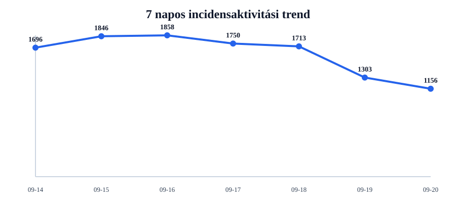
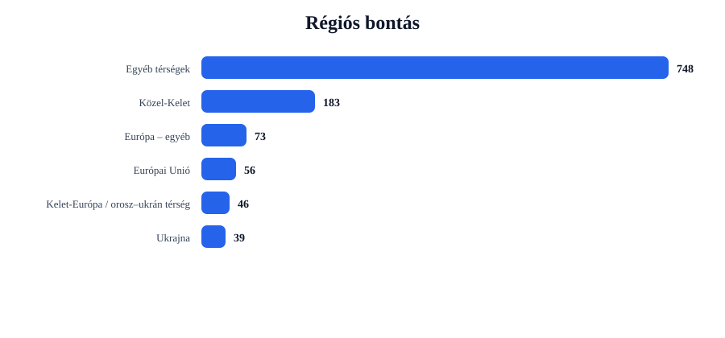
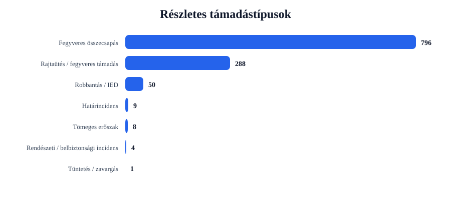
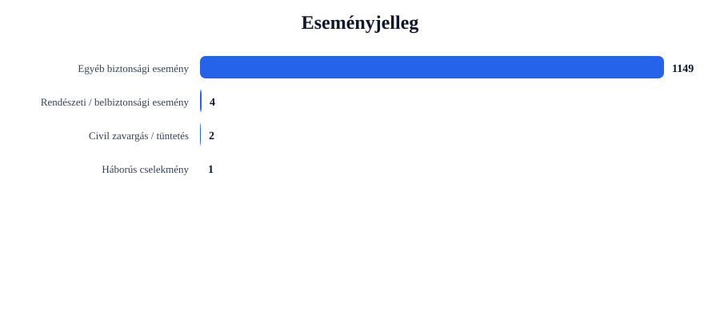

Rövid napi értékelés
Az incidensek száma csökkent: -147 esemény, 11.3% visszaesés.
A legtöbb találat ehhez az országhoz kapcsolódott: United States (267 esemény).
A legerősebb regionális súlypont: Egyéb térségek (748 esemény).
A leggyakoribb részletes támadástípus: Fegyveres összecsapás (796 találat).
A leggyakoribb eseményjelleg: Egyéb biztonsági esemény (1149 találat).
A drón-, terrorjellegű és háborús események felismerése kulcsszavas besorolással történik. Ez jó elemzési szűrő, de kézi ellenőrzést továbbra is igényelhet.
Régiós helyzetkép
Európai Unió
Azonosított események száma: 56. Leginkább érintett országok: Germany (6), Spain (6), Italy (6).
Domináns támadástípusok: Fegyveres összecsapás (38), Rajtaütés / fegyveres támadás (18). Domináns eseményjelleg: Egyéb biztonsági esemény (56).
| Cím | Ország | Helyszín | Részletes típus | Eseményjelleg | Forrás |
|---|---|---|---|---|---|
| fight – France | France | France | Fegyveres összecsapás | Egyéb biztonsági esemény | www.kjzz.org |
| fight – Berlin, Berlin, Germany | Germany | Berlin, Berlin, Germany | Fegyveres összecsapás | Egyéb biztonsági esemény | economictimes.indiatimes.com |
| fight – Paris, France (general), France | France | Paris, France (general), France | Fegyveres összecsapás | Egyéb biztonsági esemény | impactnottingham.com |
| fight – Spain | Spain | Spain | Fegyveres összecsapás | Egyéb biztonsági esemény | www.echolive.ie |
| fight – Netherlands | Netherlands | Netherlands | Fegyveres összecsapás | Egyéb biztonsági esemény | www.dw.com |
Ukrajna
Azonosított események száma: 39. Leginkább érintett országok: Ukraine (39).
Domináns támadástípusok: Robbantás / IED (27), Fegyveres összecsapás (8), Rajtaütés / fegyveres támadás (4). Domináns eseményjelleg: Egyéb biztonsági esemény (39).
| Cím | Ország | Helyszín | Részletes típus | Eseményjelleg | Forrás |
|---|---|---|---|---|---|
| fight – Kherson, Khersons'ka Oblast', Ukraine | Ukraine | Kherson, Khersons'ka Oblast', Ukraine | Robbantás / IED | Egyéb biztonsági esemény | www.kyivpost.com |
| fight – Sumy, Sums'ka Oblast', Ukraine | Ukraine | Sumy, Sums'ka Oblast', Ukraine | Robbantás / IED | Egyéb biztonsági esemény | www.bbc.co.uk |
| assault – Kherson, Khersons'ka Oblast', Ukraine | Ukraine | Kherson, Khersons'ka Oblast', Ukraine | Robbantás / IED | Egyéb biztonsági esemény | www.dailymail.com |
| fight – Ternova, Kharkivs'ka Oblast', Ukraine | Ukraine | Ternova, Kharkivs'ka Oblast', Ukraine | Robbantás / IED | Egyéb biztonsági esemény | www.rightspeak.net |
| assault – Kramatorsk, Donets'ka Oblast', Ukraine | Ukraine | Kramatorsk, Donets'ka Oblast', Ukraine | Robbantás / IED | Egyéb biztonsági esemény | www.rightspeak.net |
Balkán
Azonosított események száma: 11. Leginkább érintett országok: Turkey (5), Albania (5), Macedonia (1).
Domináns támadástípusok: Fegyveres összecsapás (8), Rajtaütés / fegyveres támadás (3). Domináns eseményjelleg: Egyéb biztonsági esemény (11).
| Cím | Ország | Helyszín | Részletes típus | Eseményjelleg | Forrás |
|---|---|---|---|---|---|
| fight – Ankara, Ankara, Turkey | Turkey | Ankara, Ankara, Turkey | Fegyveres összecsapás | Egyéb biztonsági esemény | www.rozanaspokesman.com |
| fight – Istanbul, Istanbul, Turkey | Turkey | Istanbul, Istanbul, Turkey | Fegyveres összecsapás | Egyéb biztonsági esemény | www.albawaba.net |
| fight – Turkey | Turkey | Turkey | Fegyveres összecsapás | Egyéb biztonsági esemény | www.presstv.co.uk |
| fight – Mersin, Iç, Turkey | Turkey | Mersin, Iç, Turkey | Fegyveres összecsapás | Egyéb biztonsági esemény | www.albawaba.net |
| assault – Constantinople, Istanbul, Turkey | Turkey | Constantinople, Istanbul, Turkey | Rajtaütés / fegyveres támadás | Egyéb biztonsági esemény | freebeacon.com |
Közel-Kelet
Azonosított események száma: 183. Leginkább érintett országok: Iran (27), Israel (25), Pakistan (22).
Domináns támadástípusok: Fegyveres összecsapás (132), Rajtaütés / fegyveres támadás (44), Tömeges erőszak (6). Domináns eseményjelleg: Egyéb biztonsági esemény (181), Civil zavargás / tüntetés (2).
| Cím | Ország | Helyszín | Részletes típus | Eseményjelleg | Forrás |
|---|---|---|---|---|---|
| fight – Riyadh, Ar Riya?, Saudi Arabia | Saudi Arabia | Riyadh, Ar Riya?, Saudi Arabia | Fegyveres összecsapás | Egyéb biztonsági esemény | cbs4local.com |
| fight – Mokha, Taizz, Yemen | Yemen | Mokha, Taizz, Yemen | Fegyveres összecsapás | Egyéb biztonsági esemény | www.the-messenger.com |
| fight – Tehran, Tehran, Iran | Iran | Tehran, Tehran, Iran | Fegyveres összecsapás | Egyéb biztonsági esemény | www.brisbanetimes.com.au |
| fight – Gaza, Israel (general), Israel | Israel | Gaza, Israel (general), Israel | Fegyveres összecsapás | Egyéb biztonsági esemény | venezuelanalysis.com |
| fight – Israel | Israel | Israel | Fegyveres összecsapás | Egyéb biztonsági esemény | www.brisbanetimes.com.au |
Kelet-Európa / orosz–ukrán térség
Azonosított események száma: 46. Leginkább érintett országok: Russia (41), Belarus (3), Moldova (2).
Domináns támadástípusok: Robbantás / IED (23), Fegyveres összecsapás (17), Rajtaütés / fegyveres támadás (6). Domináns eseményjelleg: Egyéb biztonsági esemény (46).
| Cím | Ország | Helyszín | Részletes típus | Eseményjelleg | Forrás |
|---|---|---|---|---|---|
| fight – Kursk, Kurskaya Oblast', Russia | Russia | Kursk, Kurskaya Oblast', Russia | Robbantás / IED | Egyéb biztonsági esemény | www.rightspeak.net |
| fight – Rostov, Rostovskaya Oblast', Russia | Russia | Rostov, Rostovskaya Oblast', Russia | Robbantás / IED | Egyéb biztonsági esemény | www.eng.kavkaz-uzel.eu |
| fight – Ramenskoye, Nizhegorodskaya Oblast', Russia | Russia | Ramenskoye, Nizhegorodskaya Oblast', Russia | Robbantás / IED | Egyéb biztonsági esemény | www.northerndailyleader.com.au |
| fight – Vnukovo, Kostromskaya Oblast', Russia | Russia | Vnukovo, Kostromskaya Oblast', Russia | Robbantás / IED | Egyéb biztonsági esemény | www.bbc.co.uk |
| fight – Moscow Oblast, Moskovskaya Oblast', Russia | Russia | Moscow Oblast, Moskovskaya Oblast', Russia | Robbantás / IED | Egyéb biztonsági esemény | english.news.cn |
Európa – egyéb
Azonosított események száma: 73. Leginkább érintett országok: United Kingdom (65), Switzerland (4), Oceans (1).
Domináns támadástípusok: Fegyveres összecsapás (54), Rajtaütés / fegyveres támadás (19). Domináns eseményjelleg: Egyéb biztonsági esemény (73).
| Cím | Ország | Helyszín | Részletes típus | Eseményjelleg | Forrás |
|---|---|---|---|---|---|
| fight – United Kingdom | United Kingdom | United Kingdom | Fegyveres összecsapás | Egyéb biztonsági esemény | peacearchnews.com |
| assault – United Kingdom | United Kingdom | United Kingdom | Rajtaütés / fegyveres támadás | Egyéb biztonsági esemény | www.vanguardngr.com |
| fight – London, London, City of, United Kingdom | United Kingdom | London, London, City of, United Kingdom | Fegyveres összecsapás | Egyéb biztonsági esemény | impactnottingham.com |
| fight – Manchester, Manchester, United Kingdom | United Kingdom | Manchester, Manchester, United Kingdom | Fegyveres összecsapás | Egyéb biztonsági esemény | impactnottingham.com |
| fight – Cambridge, Cambridgeshire, United Kingdom | United Kingdom | Cambridge, Cambridgeshire, United Kingdom | Fegyveres összecsapás | Egyéb biztonsági esemény | www.nzherald.co.nz |
Egyéb térségek
Azonosított események száma: 748. Leginkább érintett országok: United States (267), India (100), Nigeria (53).
Domináns támadástípusok: Fegyveres összecsapás (539), Rajtaütés / fegyveres támadás (194), Határincidens (9). Domináns eseményjelleg: Egyéb biztonsági esemény (743), Rendészeti / belbiztonsági esemény (4), Háborús cselekmény (1).
| Cím | Ország | Helyszín | Részletes típus | Eseményjelleg | Forrás |
|---|---|---|---|---|---|
| fight – Battle Ground, Washington, United States | United States | Battle Ground, Washington, United States | Fegyveres összecsapás | Háborús cselekmény | katu.com |
| fight – United States | United States | United States | Fegyveres összecsapás | Egyéb biztonsági esemény | venezuelanalysis.com |
| fight – Washington, District of Columbia, United States | United States | Washington, District of Columbia, United States | Fegyveres összecsapás | Egyéb biztonsági esemény | www.brisbanetimes.com.au |
| fight – Islamabad, Islamabad, Pakistan | Pakistan | Islamabad, Islamabad, Pakistan | Fegyveres összecsapás | Egyéb biztonsági esemény | whbl.com |
| fight – White House, District of Columbia, United States | United States | White House, District of Columbia, United States | Fegyveres összecsapás | Egyéb biztonsági esemény | pidgin.informationng.com |
Grafikonos áttekintés




Top 5 kiemelt esemény
| # | Cím | Ország | Helyszín | Részletes típus | Eseményjelleg | Súly | Forrás |
|---|---|---|---|---|---|---|---|
| 1 | fight – Kherson, Khersons'ka Oblast', Ukraine | Ukraine | Kherson, Khersons'ka Oblast', Ukraine | Robbantás / IED | Egyéb biztonsági esemény | 21 | www.kyivpost.com |
| 2 | fight – Sumy, Sums'ka Oblast', Ukraine | Ukraine | Sumy, Sums'ka Oblast', Ukraine | Robbantás / IED | Egyéb biztonsági esemény | 19 | www.bbc.co.uk |
| 3 | assault – Kherson, Khersons'ka Oblast', Ukraine | Ukraine | Kherson, Khersons'ka Oblast', Ukraine | Robbantás / IED | Egyéb biztonsági esemény | 19 | www.dailymail.com |
| 4 | fight – Ternova, Kharkivs'ka Oblast', Ukraine | Ukraine | Ternova, Kharkivs'ka Oblast', Ukraine | Robbantás / IED | Egyéb biztonsági esemény | 18 | www.rightspeak.net |
| 5 | assault – Kramatorsk, Donets'ka Oblast', Ukraine | Ukraine | Kramatorsk, Donets'ka Oblast', Ukraine | Robbantás / IED | Egyéb biztonsági esemény | 18 | www.rightspeak.net |
Napi bontások
Régiók
- Egyéb térségek748
- Közel-Kelet183
- Európa – egyéb73
- Európai Unió56
- Kelet-Európa / orosz–ukrán térség46
- Ukrajna39
- Balkán11
Országok
- United States267
- India101
- United Kingdom65
- Nigeria53
- Pakistan52
- Russia41
- Ukraine39
- Iran27
- Israel25
- Australia25
Részletes típusok
- Fegyveres összecsapás796
- Rajtaütés / fegyveres támadás288
- Robbantás / IED50
- Határincidens9
- Tömeges erőszak8
- Rendészeti / belbiztonsági incidens4
- Tüntetés / zavargás1
Eseményjelleg
- Egyéb biztonsági esemény1149
- Rendészeti / belbiztonsági esemény4
- Civil zavargás / tüntetés2
- Háborús cselekmény1
Források
- www.hindustantimes.com37
- www.dailymail.com35
- www.middleeasteye.net29
- economictimes.indiatimes.com28
- timesofindia.indiatimes.com28
- aninews.in24
- www.arabnews.com21
- www.bignewsnetwork.com21
- tribune.com.pk19
- www.tribuneindia.com19
Blogra használható intelligence card
Módszertani megjegyzés
Ez a jelentés nyílt forrású, automatizált adatgyűjtés alapján készül. A dróntámadások, terrorjellegű események és háborús cselekmények azonosítása kulcsszavas besorolással történik. Ez elemzési támpont, nem hivatalos minősítés.